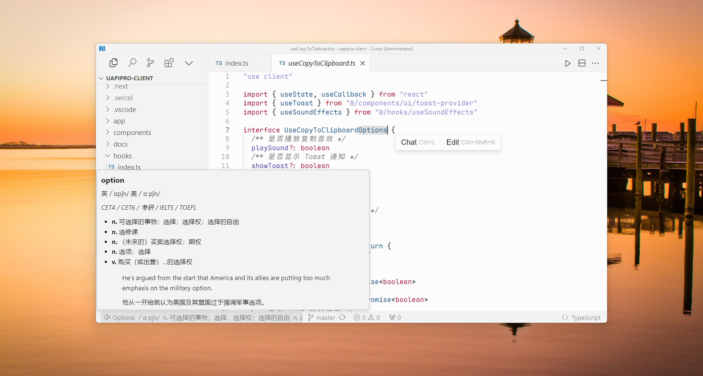
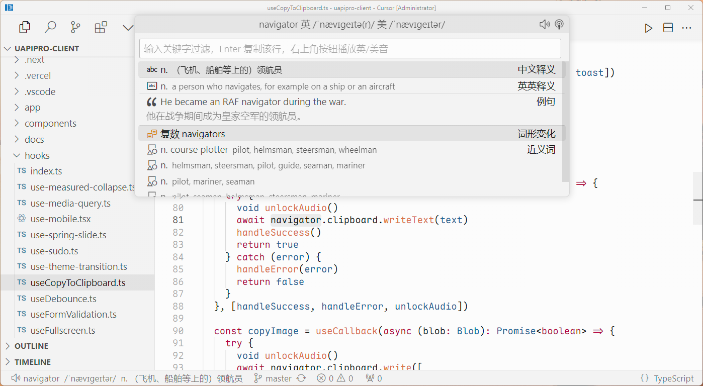
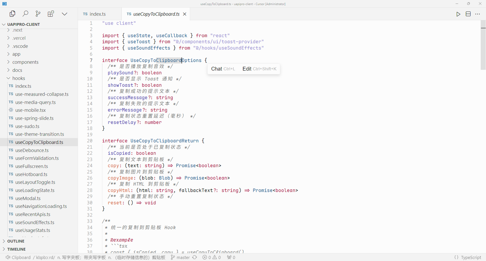

完整词条，一键唤出
按 Alt+W 打开查词面板，查看双语释义、词形变化、例句、词组、近义词和词汇分级。选中一行并按回车，即可复制。

随按随听，阅后即隐
音标与释义在状态栏轻巧显示，数秒后自然隐去。鼠标悬停可以查看完整词条，并切换英式或美式发音。

无感播放，断网照听
发音在后台播放，不弹出扰人的窗口。每个单词的发音文件只下载一次，之后缓存在本机，重复朗读无需再次联网。词典和发音数据来自 uapis.cn。
快捷键和设置
| 快捷键 | 作用 |
|---|---|
| Alt+Q | 读出光标下或选中的单词 |
| Alt+W | 打开查词面板 |
| Alt+Shift+Q | 重读上一个单词 |
| 配置项 | 默认值 | 说明 |
|---|---|---|
wordSpeaker.accent | us | 默认口音。uk 为英式，us 为美式 |
wordSpeaker.showDefinition | true | 读单词时是否在状态栏显示音标和释义 |
wordSpeaker.statusBarDuration | 6 | 状态栏信息的显示秒数 |
wordSpeaker.playbackMode | auto | 默认优先使用系统原生播放器，也可切换为 VS Code 内置播放器 |
wordSpeaker.playerCommand | 空 | 需要时可自定义播放命令 |